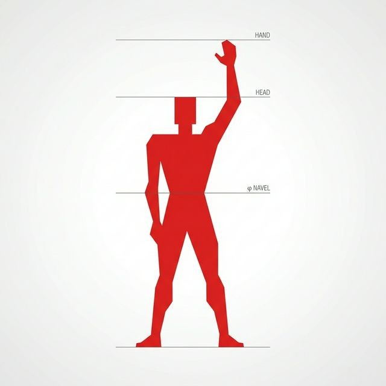
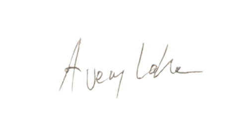

What is the measure
of the human?
An interactive conceptual artwork.
The Word

The Struggle


The Solution


The Cage




Leonardo drew it.
Le Corbusier scaled it to architecture.
one ideal body, one universal standard.
So what happens when you actually test the ideal?
If any group would match Da Vinci's proportions, it would be this one.
The circle's center and the square's center never aligned.
the geometry fractured.
the other direction entirely.
each body optimized, each "ideal," and none alike.
It exploded.
what is?
The Vitruvian Signal
Signal in Spheres and Cubes: A Triptych
Avery Lake, 2026
Da Vinci’s Model
Man is the measure of all things.
Two poses, two centers, the body inscribed
in circles and squares.
Even here, a whisper of signal.
The Shift
Circles become spheres. Squares become cubes.
Unbound from form,
the whisper fades. Matter without coherence holds only potential.
The Signal Model
The SignalThe pattern-making capacity present at every degree of consciousness. Not the
body, not the medium; what flows through both. is the measure of all things.
When
complexity is sufficient,
something wakes up.
The Signal


It was always the signal, moving through every medium, in every age.
Portraits
- Marcus Vitruvius Pollio. Engraving by Jacopo Bernardi after Vincenzo Raggio. Wikimedia Commons, Public domain.
- Leonardo da Vinci. Presumed self-portrait, red chalk on paper, c. 1512. Wikimedia Commons, Public domain.
- Le Corbusier (Charles-Édouard Jeanneret). Photograph by Joop van Bilsen for Anefo, 1964. Wikimedia Commons, CC0.
- Avery Lake. Self-portrait and The Mirror Making of a Self Portrait. Avery Lake Gallery.
Signatures
- Leonardo da Vinci's signature. SVG by Connormah. Wikimedia Commons, Public domain.
- Le Corbusier's signature. From Lyon Municipal Archives, 1957. Wikimedia Commons, Public domain.
Artwork & Diagrams
- Vitruvian Man. Leonardo da Vinci, c. 1490. Pen and ink on paper. Wikimedia Commons, Public domain. Photo: Luc Viatour.
- Leonardo da Vinci's Vitruvian Man Compared With Contemporary Man and Woman. Figure from Mildenberger, M, et al. (2020). JAMA Network.
- Modulor measurements. SVG by Shyamal. Wikimedia Commons, CC0.
- Athlete. Photography by Howard Schatz & Beverly Ornstein. howardschatz.com. Used as background image with credit.
Studies & References
- Thomas DM, Galbreath D, Boucher M, Watts K. Revisiting Leonardo da Vinci's Vitruvian Man Using Contemporary Measurements. JAMA. 2020;323(22):2342–2343. JAMA Network.
- Epstein, David. "Big Bang of Body Types." Scientific American, Aug 16, 2016. See also: Epstein, David. The Sports Gene: Inside the Science of Extraordinary Athletic Performance. Penguin, 2013.
- Vitruvius, De architectura, Book III, Chapter 1.
- Le Corbusier, Le Modulor (1948) and Modulor 2 (1955).
Further Exploration
No noise. Just quiet updates when something meaningful is ready.
Subscribe to The Human Signal